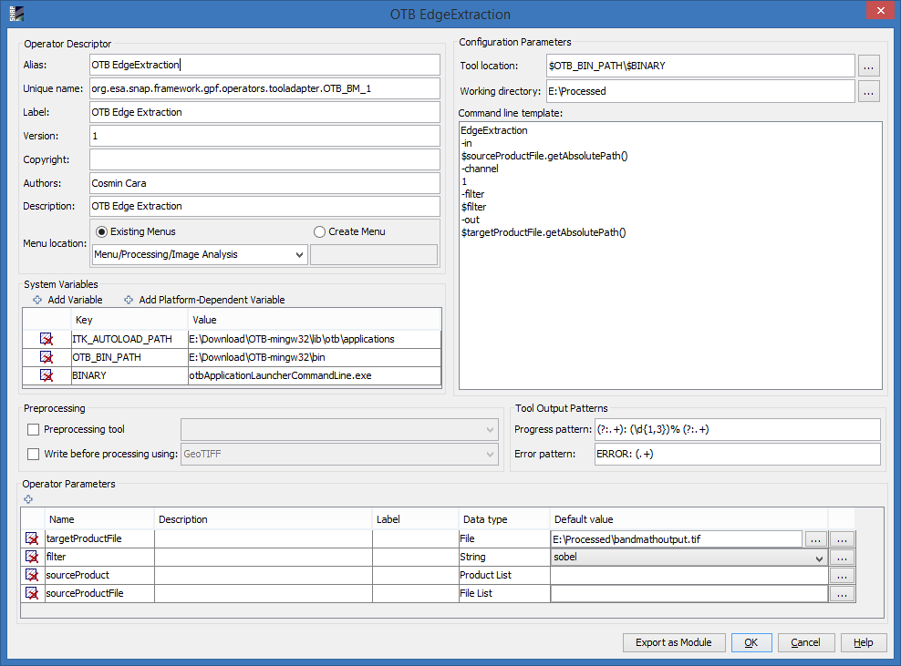
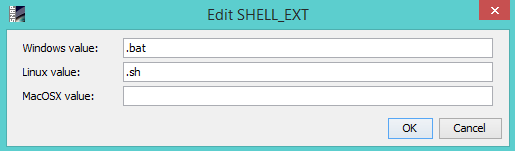
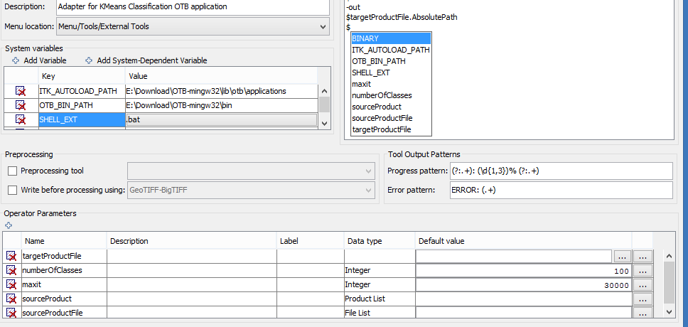
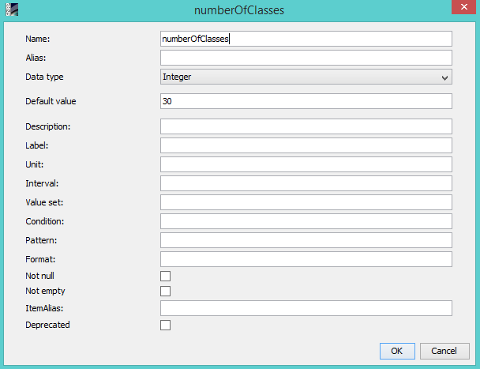
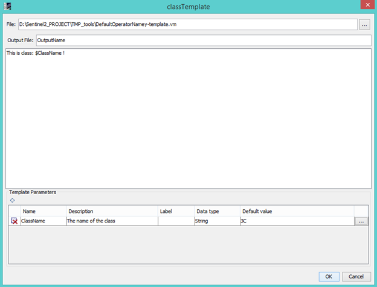

Creating a new adapter or modifying an existing one
The form for creating a new adapter is reused for editing an existing adapter and for duplicating an adapter.

The form is structured into multiple areas:
- descriptor details
- system variables
- pre-processing
- configuration
- tool output patterns
- parameters
For details about the operator structure and what is the use of each member, see here.
Descriptor details
This area consists in the following fields:
- Alias: a short name for the adapter to distinguish from the rest of the adapters, this alias will be used to
name the folder on disk where the operator resides, so special characters should not be used (for example,
on windows, the following characters are not allowed when defining a folder name: <>:"/\|?*). This is a
required field.
- Unique Name: this name is a name which registers the adapter in the toolbox. It must be unique. This is a
required field.
- Label: is the user-friendly name. This field is not required.
- Version:
- Copyright:
- Authors:
- Description:
- Menu Location: this represents the path to the menu where the tool shortcut will be placed. The user can choose
between placing the adapter action in one of the already existing menus, or to create a new menu.
System variables
System variables are values that must be set when the tools is executed. Such a variable
may or may not be a system-wide variable (eg. one set in Environment Variables on Windows OS). If the latter case,
the system value will always replace the user-defined value.
The value of a system variable (in the context of Standalone Tool Adapter) can be shared across adapters, with the
condition it is defined in each such adapter. For example, if two adapters declare the same $VAR variable, it is
enough to edit its value in one of the adapters, and it will be automatically reflected in the other adapter.
There are two types of variables:
- Simple variables, that only have one value;
- System-dependent variables, that allow setting values for the three operating systems supported (Windows, Linux and MacOSX).
This kind of variables is necessary, for example, when you'd like to create a single adapter that can be used on either OS, but
there are just a few elements that are different among OSes (like, for example, the shell script extension: .bat on Windows,
.sh on Linux and MacOSX).
A new variable can be added by pressing one of the + Add Variable or + Add System-Dependent Variable buttons and an
existing one can be deleted by using the delete button (X) in the left of the desired variable.
The key and value of an variable can be edited by double-clicking the corresponding cell. Simple variables can be edited in place,
while for editing system-dependent variables the following small form is used:

Pre-processing area contains 2 field, each one with a checkbox and a combobox:
- Pre-processing tool: when this option is checked and an already defined tool is chosen in the combobox,
that tool is executed with the same input parameters values as the current tool, as the first step of the
execution of the current adapter.
- Write before pre-processing: when this option is checked and a writer is selected in the combobox, the product
is written to disk as the second step of the execution of the current adapter. The path where the product is
saved is given as the value of the parameter sourceProductFile
Configuration parameters includes:
- Tool location: location of the executable file corresponding to the tool. The location can be expressed in one of the following forms:
- Just the executable name (and extension), with the condition that it is already added to system path;
- A path expressed by means of one of the defined system variables and the executable name (and extension);
- The full path of the executable (including its name and extension).
- Working directory: the place where the temporary files are saved. One can use one of the define system variables to set its value.
- Tool handles the output name: whether the tool needs the name of the output product, or it produces it by itself.
- Command line template: the velocity template to be executed, including the command line arguments of the tool,
each one of them on a separate line. The content of the template is saved in a file called
<operator_alias>_template.vm under the folder of the operator.
To use parameters and system variables in the velocity template, you have to prepend their names with the dollar
sign ('$'). To minimize the spelling errors when typing parameters, when pressing '$' a suggestion
list will be displayed, containing all the parameter and variable names, lexicographically sorted:

Note: all the values of the parameters of type File (the tool location, the working directory, and any other File (or File List) type parameter that
is marked as 'Not Null' or 'Not Empty' will be checked for pointing to existing files or folders when pressing the OK button.
Tool output patterns
Tool output patterns includes 2 defined patterns for determining the progress of the tool and also the
error status. When the tool outputs something, the two patterns are checked and if one of them matches the output,
this is registered in the log (in SNAP application, when the Console is active, the log messages will appear
in the console view)
Operator parameters
This area consists in a table of parameters necessary for the processing of the velocity template. Each parameter
can have the following properties:
- name
- description
- label
- data type
- default value
The data type of a parameter can be as follows:
| Type | Description | Special use-case |
| Integer | Integer values | N/A |
| Decimal | Float values | N/A |
| String | A list of characters | N/A |
| Boolean | The control of this type is a checkbox, so the accepted values are true and false. |
N/A |
| List | This type represents a list of strings, delimited by comma. | N/A |
| Template Parameter |
The template parameters are velocity templates that need to be interpreted
before the execution of the tool. The interpreted result will be saved on local disk, in the temporary folder
of the adapter. The full path of the result file will be saved as this parameter's value, so when the parameter is
used in the tool template, it will be replaced with the full path of the interpreted result. |
N/A |
| Template Before |
This is a velocity template which will be interpreted before the execution of the tool. |
It can be used to create/copy some files necessary for the execution, or to... |
| Template After | This is a velocity template which will be executed after the tool execution. |
It can be used to delete some temporary files that were used to the actual execution (for example
temporary products - see ... parameter type), or to do some operations with the result of the execution
(like renaming the file containing the final product)
|
| Product List |
Represents a product loaded in SNAP application context (or a list of loaded products) |
This type is not available in the parameter type combobox, instead only the default parameter called
'sourceProduct' has this type (see section Default parameters) |
| File List |
Represents a file or a list of files |
This type is not available in the parameter type combobox, instead only the default parameter called
'sourceProductFile' has this type (see section Default parameters) |
Default (read-only) parameters
An adapter must have 3 parameters. If the descriptor of the adapter does not contain one or all of this parameters,
they are added when the editing form is launched. Those parameters are:
-
sourceProduct - represents the product(s) choosed by the user from the ones loaded in SNAP context on the
time of the execution (see Executing an adapter for details about how to choose a product). When this
parameter is used in the velocity template, for each product the method getFileLocation() is called, and
the path returned by the method is passed to the velocity template. If there are multiple source products,
each one is accessed by using the syntax sourceProduct[0], sourceProduct[1], ... This parameter cannot be
edited or deleted.
-
sourceProductFile - this is a File or a list of files corresponding to the source products chosed on execution.
This is used only if 'Write product with' is checked and a writer is chosed. When this happens, all the source
products are written on disk, in the temporary folder, and the absolute path of the file(s) is stored in
this parameter, so it can be used in the velocity template. This parameter cannot be edited or deleted.
-
targetProductFile - this is a File corresponding to the target product that will be loaded in SNAP context
after the tool execution. This parameter cannot be deleted or edited, but his value can be edited (the default value
and also the value on execution).
Regular parameters
All user-defined parameters that are not default parameters or template parameters are considered as regular
parameters. The type of those parameters can be: Integer, Decimal, String, Boolean, List. Those parameters can be
edited by pressing the corresponding 'Ellipsis' (...) button. This will open a new form, where the following
properties of the parameter can be changed:
- Name
- Alias
- Type
- Default value
- Description
- Label
- Unit
- Interval
- Value set
- Condition
- Pattern
- Format
- Not null
- Not empty
- Alias
- Deprecated

Template parameters
The template parameters are parameters that represent a velocity template stored in a file on disk. So this is
actually a parameter, having the type File, on which you can pass other regular parameters.
When editing this type of parameter, first a file must be chosed, and then the template gets loaded in the form and
some new parameters can be defined for this template:

This template will be interpreted in 3 key moments of the execution:
- If the parameter type is Template Before, the template gets interpreted before any of the execution
steps of the toll gets started.
- If the parameter type is Template Parameter, the template gets interpreted on strating the execution
of the tool. In this case, the result is saved in the working directory, and the full path to the file gets
saved in this parameter's value.
- If the parameter type is Template After, the template gets interpreted after the execution
steps of the toll, as the final step. The result is also saved in the working directory.